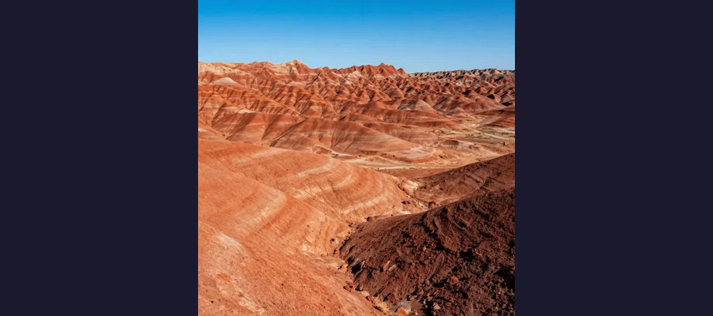

The Mysterious Monoliths: Metal Pillars from Nowhere

A triangular metal monolith discovered in the Utah desert in November 2020.
In late 2020, a bizarre mystery captured the world's attention. Shiny metal monoliths began appearing in remote locations across the globe - and disappearing just as mysteriously. Were they art installations, elaborate pranks, or something more otherworldly?
Overview
The Utah Discovery
On November 18, 2020, a helicopter crew from the Utah Department of Public Safety was counting bighorn sheep from the air when they spotted something highly unusual in the red rock desert. A triangular metal pillar, approximately 10-12 feet tall, stood gleaming in a remote canyon.

The remote Utah canyon where the first monolith was discovered.
🛸 2001: A Space Odyssey Connection
The monoliths immediately drew comparisons to the mysterious alien artifacts from Stanley Kubrick's film, sparking wild speculation about their origin.
Evidence
A useful way to read this evidence is by confidence level. High-confidence points are independently confirmed by multiple sources; medium-confidence points are plausible but debated; low-confidence points stay provisional until stronger data appears.
Historical work on The Mysterious Monoliths is strongest when primary records, material traces, and later peer-reviewed analysis point in the same direction. This layered approach helps separate observations from retellings and reduces the risk of repeating popular but unsupported claims.
A Global Phenomenon
Once the Utah monolith made international news, similar structures began appearing worldwide. Within weeks, monoliths were reported in Romania, California, Nevada, Pennsylvania, the Netherlands, Morocco, and even the Isle of Wight.
🗺️ Worldwide Appearances
By early 2021, over 100 monoliths had been reported across 30+ countries. Most were quickly removed or disappeared under mysterious circumstances.
Competing Explanations
Competing explanations usually persist because each one fits part of the evidence while missing another part. Researchers test these models against chronology, physical constraints, and independent documentation to identify which interpretation requires the fewest assumptions.
The Disappearances
Perhaps even stranger than the appearances were the disappearances. The original Utah monolith vanished just days after its discovery. Witnesses reported seeing four men remove it on November 27, 2020. The Romania monolith also disappeared within days, only to be replaced briefly by a smaller, rusty version.
Many monoliths appeared and disappeared under cover of darkness.
👀 The 'Monolith Makers'
Several art collectives and individuals claimed responsibility for various monoliths, but the true origins of many remain unknown.
Open Questions
As new datasets and publications appear, the strongest updates usually come from transparent methods and independently checkable evidence rather than dramatic single-source claims.
For that reason, responsible coverage separates what is known, what is probable, and what is still uncertain. That structure keeps the story engaging while protecting factual accuracy.
Open questions remain because source quality is uneven across time: some records are direct and detailed, while others are fragmentary or second-hand. Future archival discoveries, improved imaging, and more precise dating methods may refine conclusions without overturning well-supported core findings.
Current conclusions rely on the strongest available records and analyses, while some details remain provisional until additional evidence is published and independently replicated.
Art, Prank, or Mystery?
The most likely explanation is that the monoliths were created by artists and pranksters inspired by the initial discovery. However, the speed at which copycats appeared worldwide, the remote locations chosen, and the coordinated disappearances have fueled ongoing speculation.
🎨 The Most Famous Claim
Some monoliths were definitively linked to an anonymous art collective, but the original Utah monolith's creator has never been officially identified.
The monolith phenomenon of 2020-2021 remains one of the most unusual viral mysteries of recent years. Whether art, prank, or something stranger, they captured the world's imagination during a time when people desperately needed wonder and mystery.
References & Further Reading
- Wikipedia overview for this topic
- Britannica research links
- Google Scholar papers and citations
Editorial note: We cross-check claims across multiple independent sources. See our Editorial Policy.